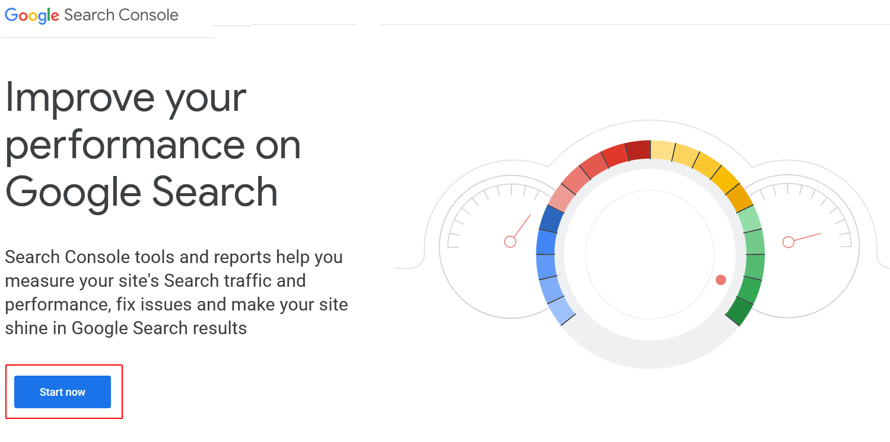
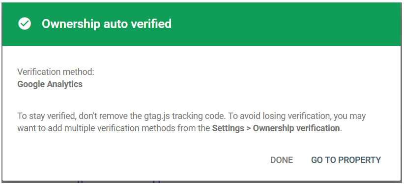
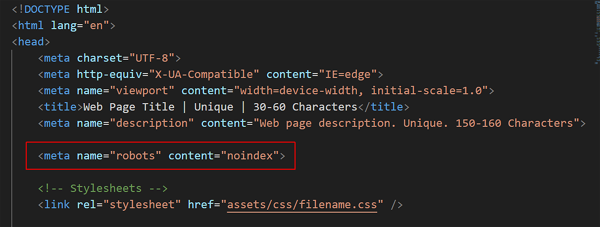
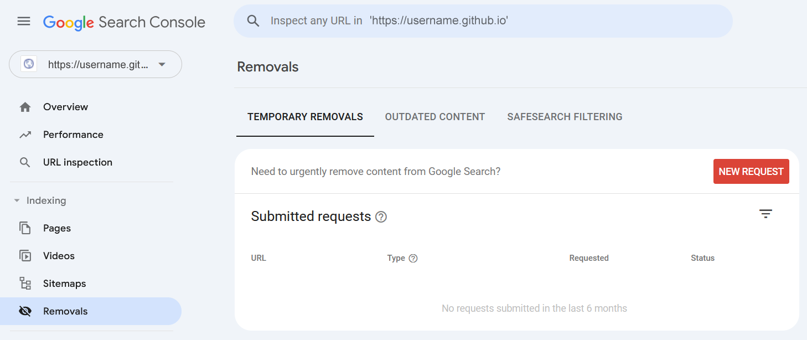
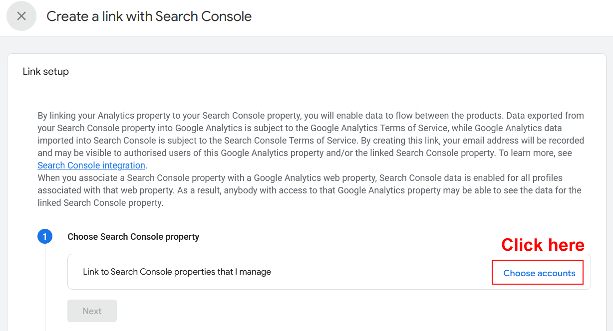
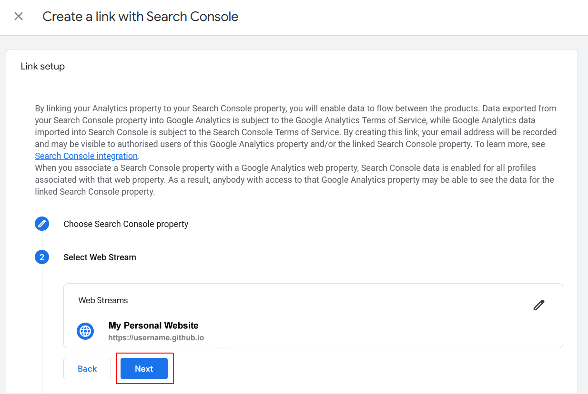
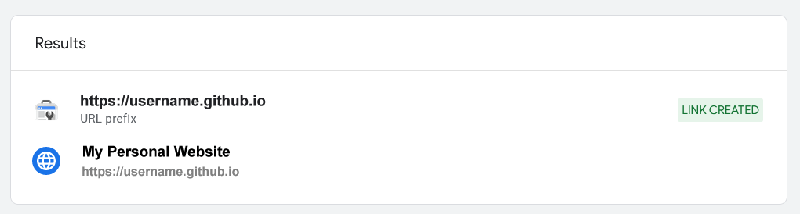

Learning Goals
At the end of this Tutorial you will be able to:
- Add your website to Google Search Console (GSC).
- Create and upload an XML sitemap file.
- Connect GSC to your Google Analytics account.
- Use the various features of GSC to improve your performance on Google search results.
- View detailed reports on your website's traffic, keywords and click-through rates (CTRs).
About Google Search Console (GSC)
Google Search Console is a free tool offered by Google to help website owners monitor and maintain their site’s presence in Google search results.
GSC also alerts you about errors, security issues, and crawling/indexing problems that may affect your website’s search rankings.
Crawling, indexing and ranking
To optimise your website in search engine results pages (SERPs), you need to understand the three steps of how search engines work:
- Crawling: Google and other search engines continuously run software programs – called spiders or robots – that discover new web pages and content updates to existing ones.
- Indexing: In the second step, the search engine adds the new or updated web pages it finds to its index, which is in effect a partial copy of the Internet.
- Ranking: In the final step, a search engine gives a ranking to each web page in its index based on about 200 different factors.
Web pages that rank well will appear among the first few results on the first SERP for a particular user search, such as pizza delivery sligo or refurbished laptops.
Google Search Console works in cooperation with Google Analytics. And Google Analytics only works when you have added your unique Tracking ID to each uploaded web page you want to monitor.
Accessing Google Search Console
Follow the steps below to access the Google Search Console:
- Display the Google Search Console home page at the web address below. https://search.google.com/search-console/about 
- Click the Start now button. If you are not automatically signed in, sign into GSC with the same Google Account email and password you used to sign into Google Analytics.
Adding a property (website) to GSC
After signing into Google Search Console, follow the steps below to add your website to the Console.
- If you have not previously added a website, click the + Add property option at the left of the screen.
 If you have already added one or more websites, click the dropdown list at the top-left of the screen and select the final option, + Add property.
If you have already added one or more websites, click the dropdown list at the top-left of the screen and select the final option, + Add property. - You are now shown the Select property type dialog box.
 On the right side, in the URL prefix section, enter the address of your website on Github. (For example, https://marysmith.github.io). Click the Continue button.
On the right side, in the URL prefix section, enter the address of your website on Github. (For example, https://marysmith.github.io). Click the Continue button. - You are now shown the Verify ownership dialog box. Scroll down the list of options and select Google Analytics.

- The dialog box updates as shown below. Click the Verify button.

- If verification is successful, you will receive the message shown below.  You can now work with your new website property in Google Search Console.
If verification did not succeed, use the default verification method of uploading the verification text file to your account on Github.
Using the URL Inspection tool
This option shows whether a web page is currently available to display in Google search results or not.
You can check the status of a page and also request Google to recrawl a page. To start, simply enter a URL in the top search bar and press Enter.

If a web page is not indexed, you click the REQUEST INDEXING button and request Google to manually fetch the page from your website.
You can also check if a page is visible to Google by clicking the LIVE TEST URL button.
Removing URLs from Google Search
Sometimes you may want to remove content from Google Search results.
One way to do this is to add a noindex meta tag to the page you want to remove from search results.
However, depending on how often Google crawls your website, this could take some time before your page actually disappears from search results.
Search Console’s Removals option allows you to request a URL to be removed from the search results.
Google will now block your entered URL from its search results for about six months. You can add as many URLs as you want and see them in the Removals section in the Search Console.
Adding an XML sitemap
An XML sitemap is a way for website owners to tell search engines about all the pages that exist on their website. It also tells search engines which links on your website are more important than others.
Adding an XML sitemap to your website helps search engines better crawl your website. While it doesn’t give you a boost in search rankings, it can definitely help search engines index your content more efficiently.
Your sitemap web address will look like this:
https://username.github.io/sitemap.xml
Use Sitemaps XML or similar website, and copy the file into your 'main' folder and upload it to your GitHub account.
On the Google Search Console home screen, click the Sitemaps option from the left column. Next, enter the sitemap.xml filename and click the Submit button.

Google Search Console will now check your sitemap and use it to improve its crawling of your website.
Connecting GSC to Google Analytics
Connecting Google Search Console to your Google Analytics account helps you analyse search console data in Google Analytics. This provides you with a new perspective on your top-performing content and keywords.
Here are the steps:
- Sign into your Google Analytics account.
- At the bottom-left corner of the main Dashboard screen, click the ‘Admin’ (gears) icon.

- On the next screen, in the Product Links section, click the Search Console links option.
 If Google has automatically linked your Search Console to your Analytics account, you will see a message similar to the following:
If Google has automatically linked your Search Console to your Analytics account, you will see a message similar to the following:
 If not, continue with the following steps.
If not, continue with the following steps. - You will see a screen like the following.
 Click the Link button.
Click the Link button. - A new fly-out dialog box is displayed. Click Choose accounts 
- You will now see a list of the Google Search Console properties (websites) that you have access to. Check the box next to the Search Console property you want to connect, and click the Confirm button.

- Google Analytics allows you to set up multiple data streams for a single property (website). But typically there will only be one data stream. So click Next to continue.

- Click Select to choose the Web Streams option.

- Typically, there will be only one data stream. Click Choose to select it.

- A new fly-out dialog box is displayed, asking you to confirm your choices. Click Next to continue. 
- A second confirmation screen is displayed. Click the Submit button.

- After a few seconds, you should see a green Link Created message next to your completed connection.. 
That’s it. You have successfully connected your Google Search Console data to your Analytics account.
It takes about 24 hours for data from Google Search Console to start appearing in Google Analytics. Additionally, remember that there is up to a 48-hour delay between data collection and display in both Google Search Console and Google Analytics. So don’t expect to see any GSC data in reports on today’s or yesterday’s traffic.
Once data starts to appear, a new range of more detailed reports will be available in Google Analytics:
Adding users to access Google Search Console
If you have a marketing team or you have hired someone to help you with SEO, then those users may need access to Google search console data.
Search Console allows you to easily add users and give them access to view all reports without sharing your Google account credentials with them.
To add a new user:
- Click the Settings option in the left menu, and then click the Users and permissions option.

- On the next screen, click the ADD USER button.

- Next, provide the user’s Gmail address, select their accces level, and click Add.
About Google Page Speed Insights
Another useful performance tool for frontend developers is Google Page Speed Insights. This analyses web pages and provides detailed reports on their loading speed and overall performance on both mobile and desktop devices.
Page Speed Insights also provides suggestions on how to improve your website's performance and user experience.
- Go to Google Page Speed Insights at the web address below: https://pagespeed.web.dev
- Enter a web address, click the Analyze button, and view the page's performance on desktop and mobile devices.

✅ All done.